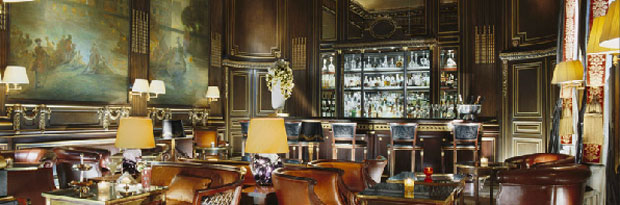

228, rue de Rivoli - Paris 1er

"My cooking is like my city, and my city is Paris". So undeniably Parisian, but also undeniably modern, Yannick Alléno became head chef at Le Meurice in the 1st district in 2003. This is his stage for demonstrating both his savoir faire and his strong creative talent for French fine-dining - he can tell what is going to appeal. In 2004, he obtained his second Michelin star, followed by his third one in 2007.Yannick Alléno thus entered the elite circle of the very best chefs in the world.
A la carte of the restaurant LE MEURICE
Starters
65,00 €
Asperges vertes du Lubéron et pousses de soja cuisinées aux herbes fraîches
65,00 €
Foie gras de canard mi-cuit au cacao, amandes en cappuccino
78,00 €
Macaroni farcis au céleri rave, foie gras et truffes noires, gratinés au parmesa
65,00 €
Emietté de tourteau tiédi dans une feuille de laitue émulsion vanilléee
62,00 €
Fleurs de courgette ivres de girolles, couteaux en coque à l'huile d'olive vierge
Main Courses
70,00 €
Saint-Pierre incrusté d’écorces de citron navets doux et pois gourmands au poivre Bourbon de
58,00 €
Rouget et olives taggiasca, cuit à plat aubergine fondante, rougail de fenouil
65,00 €
Carré d'agneau de Sisteron doré au four, petits farcis méditerranéens, pistou, pimentos
72,00 €
Pomme de ris de veau cuite lentement, olives câpres et croûtons, herbes à tortue
72,00 €
Coeur de filet de boeuf d’Argentine “Pampa Verde” crousti-fondant, sauce Périgueux
Desserts
25,00 €
Dégustation d'un chocolat pure origine "Baïano", en provenance du Brésil
20,00 €
Coussin aux amandes caramélisées crème anglaise, comme une île flottante inversée
25,00 €
Soufflé au Grand-Marnier “Cuvée du Centenaire”
25,00 €
La fraise gariguette rafraîchie au thym-citron tuile beurrée croustillante
25,00 €
La mangue “dans tous ses états”